Sexta, 04/12, e sábado, 05/12
2 dias, ao vivo, pelo Zoom, com Ricardo Di Napoli. Fundamento teológico, vivências guiadas e nada de misticismo vazio.
QUERO MEU INGRESSO AGORA100% online | Horário de Brasília | Você não precisa mudar de crença
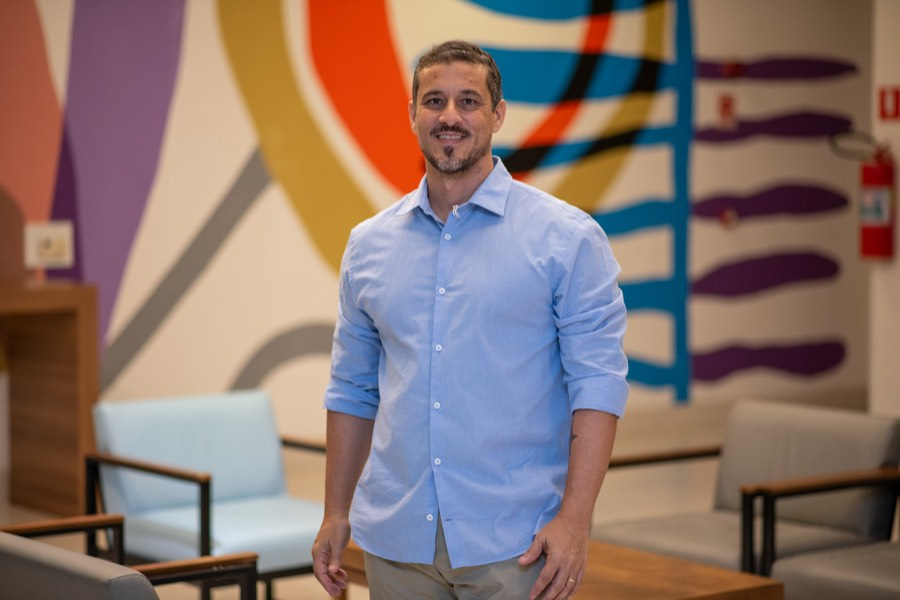
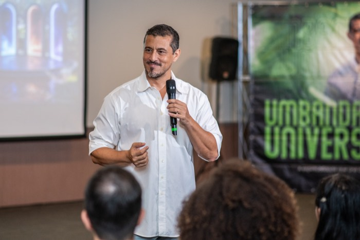
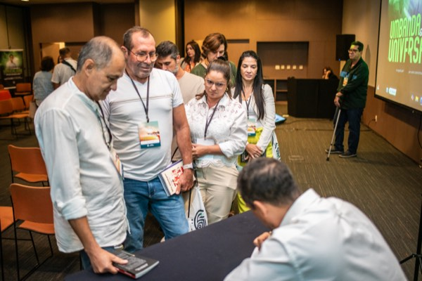
Se algum destes momentos já aconteceu com você, esta Imersão é para você.
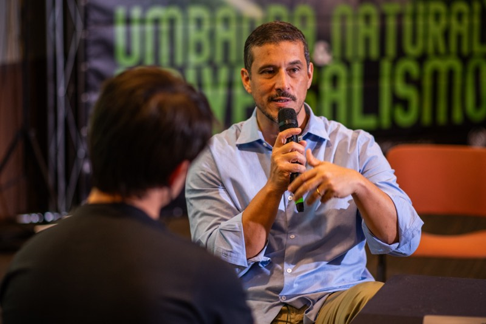
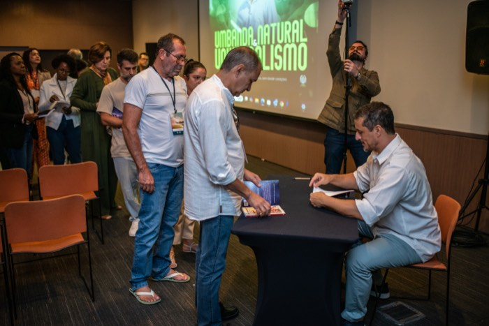
Muita gente acha que precisa ter certeza antes de começar. Não precisa.
Isso que você sente não é coincidência. Também não é loucura.
Você só precisa de um lugar certo para entender. Esse lugar tem dia e hora: sexta, 04/12, e sábado, 05/12.
Muita gente sente por anos e guarda para si, por medo de parecer "mística demais". Lê um pouco aqui, ouve um pouco ali, e a explicação muda conforme quem falou por último.
Ninguém lhe deu o chão para entender.
"Aqui a gente veio entregar conhecimento, um caminho lógico, um caminho estruturado."— Ricardo Di Napoli
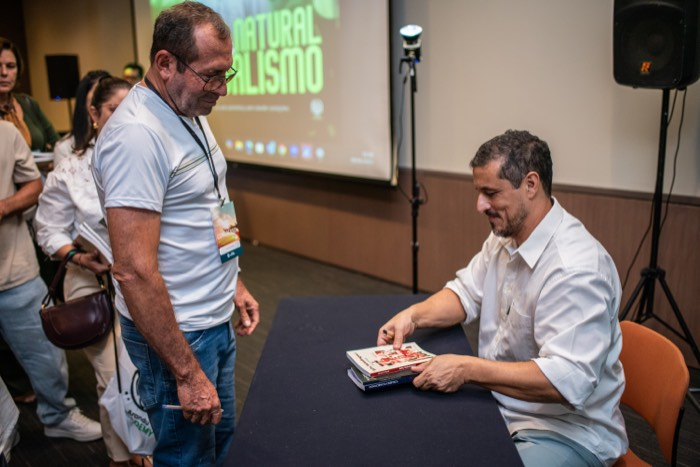
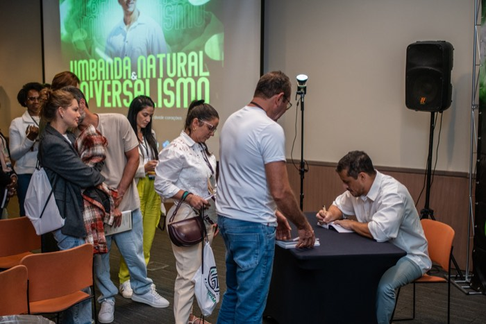
Um sonho diferente, uma intuição, uma emoção, uma percepção de energia: a Imersão dá nome ao que você sente, com estudo.
Nesses 2 dias você sai com mais clareza sobre o que é sensibilidade, o que é intuição e como caminhar com fundamento. Sem promessa de revelação instantânea. Sem atalho.
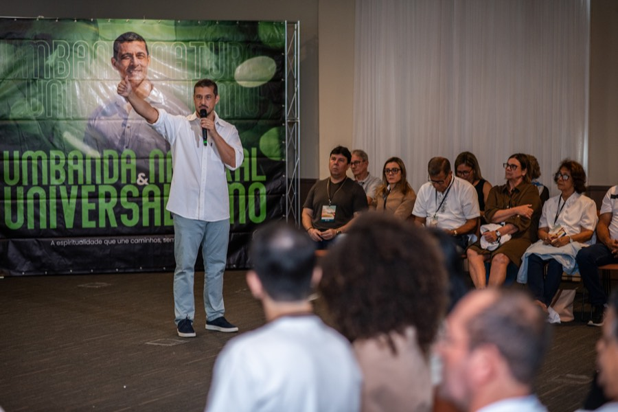
A lógica por trás da sensibilidade, da intuição e da chamada mediunidade, com vivências guiadas ao vivo.
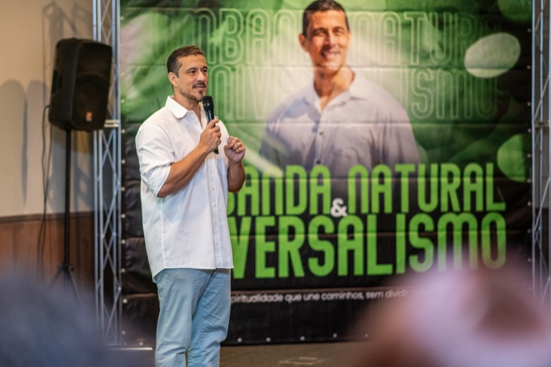
As entidades espirituais da Umbanda e o que cada uma representa, de forma teológica, sem promessa de "revelação instantânea".
A gravação dos 2 dias pode ser levada na hora de garantir o ingresso, por R$ 147,00. Ela é liberada em até 7 dias depois da imersão.
O Ricardo ensina há mais de 20 anos. Veja o que alunos dele dizem.
"Gostei da forma como ele abordava os assuntos, me sentindo em 'casa', percebendo o quanto tudo aquilo reverberava em mim."
"Estou aprendendo muito, compreendo agora o significado e a razão de muitas coisas."
"Esse quase um ano de aulas foi um divisor pra nosso trabalho espiritual."
"Muita clareza, muito material de apoio. O curso foi tão bom que vou fazer o segundo ano."
Estes depoimentos são de alunos da Formação em Teologia e Doutrina da Umbanda, do Ricardo. Não são da Imersão. Cada um conta a experiência de uma pessoa.
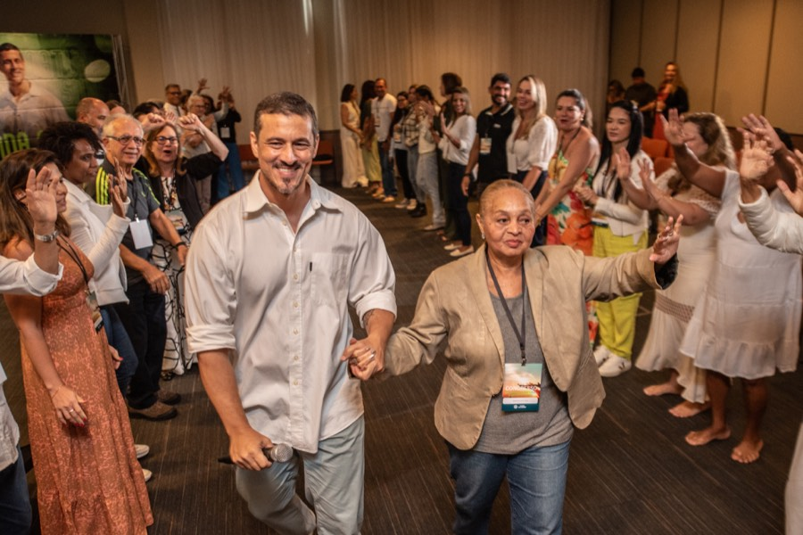
É, se você se encaixa em um destes três perfis.
Você não precisa ser médium. Você não precisa ter certeza de nada ainda.
Não é consulta, adivinhação nem trabalho espiritual. Não promete cura. Não pede que você largue a sua fé.
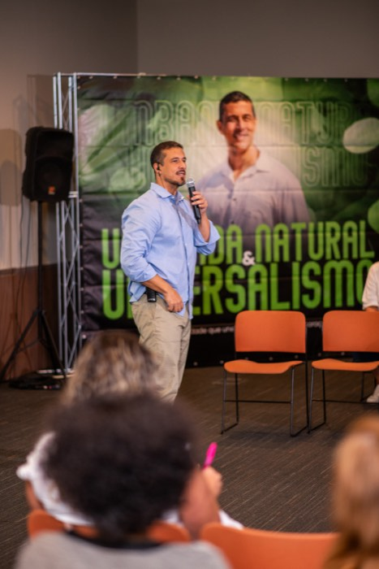
Ricardo Di Napoli tem 40 anos de vivência na Umbanda, iniciado desde criança, e mais de 20 anos ensinando. É sacerdote, administrador, filósofo e teólogo, fundador do Movimento Umbanda Natural. Já formou mais de 1.000 alunos em Teologia e Doutrina da Umbanda.
Ele se define como universalista: ensina a Umbanda com fundamento e não converte ninguém.
"Fora do conhecimento não há libertação."— Ricardo Di Napoli
Este valor vale até segunda, 23/11. Depois do prazo, o valor muda.
O prazo deste valor terminou. Aperte o botão para ver o valor atual do ingresso da Imersão Umbanda Natural.
VER O VALOR ATUALSexta, 04/12, das 18h30 às 21h30, e sábado, 05/12, das 9h às 15h. Tudo ao vivo, pelo Zoom, no horário de Brasília.
Não. Incorporação é só um dos temas. A Imersão é para quem sente e quer entender, tenha ou não vivência de terreiro.
A Imersão é ao vivo. A gravação dos 2 dias pode ser levada na hora de garantir o ingresso, por R$ 147,00. Ela é liberada em até 7 dias depois da imersão.
O ingresso é pessoal e intransferível. Faltar sem avisar não dá direito a troca nem reembolso. Avisando por e-mail com 7 dias ou mais de antecedência, você troca por outra data do mesmo evento em até 12 meses. Ingresso comprado a menos de 7 dias do evento não tem direito de arrependimento. Dúvidas: contato@aranduacademy.com.br
Não. A proposta é entender a Umbanda com fundamento. O Ricardo se define como universalista e não converte ninguém.
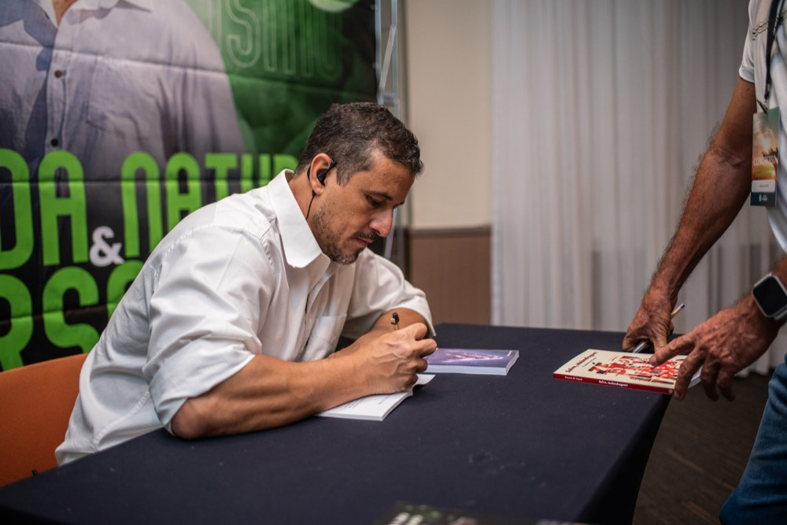
Dois dias, ao vivo, pelo Zoom, com fundamento. Sem atalho e sem misticismo vazio. O ingresso desta semana vale até segunda, 23/11. Depois do prazo, o valor muda.
QUERO MEU INGRESSO AGORA